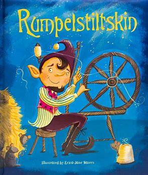

Rumpelstiltskin

Dahulu kala, ada seorang tukang giling yang miskin, tetapi memiliki seorang putri yang cantik. Suatu hari, sang tukang giling harus pergi dan berbicara dengan raja. Agar terlihat penting, ia berkata kepadanya, "Saya memiliki seorang putri yang bisa memintal jerami menjadi emas."
Raja berkata, "Itu adalah seni yang sangat saya sukai. Jika putri Anda secerdas yang Anda katakan, bawa dia besok ke istanaku, dan saya akan menguji kemampuannya." Ketika gadis itu dibawa kepadanya, raja membawanya ke dalam sebuah ruangan yang penuh dengan jerami, memberinya roda pemintal dan gulungan, dan berkata, "Sekarang mulai bekerja, dan jika besok pagi-pagi tidak berhasil memintal jerami ini menjadi emas selama malam, kamu harus mati."
"Ide bagus," kata ibunya. Mereka pun menyiapkan keranjang yang enak untuk Little Red Riding Hood dibawa ke neneknya.
Raja kemudian mengunci pintu ruangan itu sendiri dan meninggalkan gadis itu sendirian. Begitulah duduklah putri tukang giling yang miskin, dan entah bagaimana caranya, dia tidak tahu harus berbuat apa, tidak ada ide bagaimana jerami bisa dipintal menjadi emas. Dia semakin takut, sampai akhirnya dia mulai menangis.
Tetapi tiba-tiba pintu terbuka, dan masuklah seorang pria kecil dan berkata, "Selamat malam, nyonya tukang giling, mengapa kamu menangis begitu?" "Alas," jawab gadis itu, "saya harus memintal jerami menjadi emas, dan saya tidak tahu cara melakukannya." "Apakah akan memberi saya," kata si manusia kecil, "jika saya melakukannya untukmu?" "Kalungku," jawab gadis itu.
Si pria kecil mengambil kalung itu, duduk di depan roda pemintal, dan dengung, dengung, dengung, tiga putaran, dan gulungan itu penuh, kemudian dia menambahkan satu lagi, dan dengung, dengung, dengung, tiga kali putaran, dan yang kedua juga penuh. Dan begitu seterusnya sampai pagi, ketika semua jerami telah dipintal, dan semua gulungan penuh emas.
Sebelum matahari terbit, raja sudah berada di sana, dan ketika melihat emas itu, dia terkejut dan senang, tetapi hatinya semakin rakus. Dia memerintahkan putri tukang giling dibawa ke ruangan yang lain yang penuh dengan jerami, yang jauh lebih besar, dan memerintahkannya memintal itu juga dalam satu malam jika dia menghargai nyawanya. Gadis itu tidak tahu bagaimana membantu dirinya sendiri dan menangis ketika pintu terbuka lagi, dan pria kecil muncul, dan berkata, "Apa yang akan kamu berikan padaku jika saya memintal jerami menjadi emas untukmu kali ini?"
"Cincin di jari saya," jawab gadis itu.
Pria kecil itu mengambil cincin itu, mulai memutar roda pemintal lagi, dan pada pagi hari, dia telah memintal semua jerami menjadi emas berkilau.Raja sangat bergembira melihatnya, tetapi masih belum cukup baginya. Dia memerintahkan putri tukang giling dibawa ke ruangan yang lebih besar lagi yang penuh dengan jerami dan berkata, "Kamu harus memintal ini juga dalam satu malam, tetapi jika kamu berhasil, kamu akan menjadi istriku.
"Walaupun dia adalah anak tukang giling," pikirnya, "aku tidak akan bisa menemukan istri yang lebih kaya di seluruh dunia." Ketika gadis itu sendirian, pria kecil datang lagi untuk ketiga kalinya dan berkata, "Apa yang akan kamu berikan padaku jika saya memintal jerami untukmu kali ini juga?"
"Saya tidak punya apa-apa lagi yang bisa saya berikan," jawab gadis itu. "Maka berjanjilah, jika kamu menjadi ratu nanti, untuk memberikan padaku anak pertamamu." Tidak tahu apakah itu akan pernah terjadi, pikir putri tukang giling, dan, tidak tahu bagaimana cara lain untuk membantunya dalam kesulitan ini, dia menjanjikan kepada pria kecil apa yang dia inginkan, dan sekali lagi dia memintal jerami menjadi emas.
Dan ketika raja datang pagi harinya dan melihat semuanya sesuai keinginannya, dia mengambilnya sebagai istrinya, dan gadis tukang giling yang cantik menjadi ratu. Setahun kemudian, dia melahirkan seorang anak yang cantik, dan dia tidak pernah memikirkan si manusia kecil. Tetapi tiba-tiba dia datang ke dalam kamarnya dan berkata, "Sekarang berikan saya apa yang kamu janjikan."
Ratu terkejut, dan menawarkan pria kecil itu semua kekayaan kerajaan jika dia meninggalkan anak itu dengannya. Tetapi pria kecil itu berkata, "Tidak ada sesuatu yang lebih berharga bagiku daripada semua harta di dunia ini." Kemudian ratu mulai meratapi dan menangis, sehingga pria kecil itu merasa kasihan. "Aku akan memberimu waktu tiga hari," kata dia, "jika pada saat itu kamu menemukan nama saya, maka kamu bisa menyimpan anakmu."
Jadi ratu memikirkan sepanjang malam semua nama yang pernah dia dengar, dan dia mengirim utusan ke seluruh negeri untuk mencari tahu nama-nama baru yang mungkin ada. Ketika si manusia kecil datang keesokan harinya, dia mulai dengan Caspar, Melchior, Balthazar, dan menyebutkan semua nama yang dia tahu, satu per satu, tetapi pada setiap nama, si manusia kecil berkata, "Itu bukan nama saya."
Pada hari kedua, dia menyelidiki di sekitar tempat untuk mengetahui nama-nama orang di sana, dan dia mengulangi nama-nama yang paling tidak biasa dan aneh kepada si manusia kecil. Mungkin namamu adalah Shortribs, atau Sheepshanks, atau Laceleg, tetapi dia selalu menjawab, "Itu bukan nama saya."
Pada hari ketiga, utusan itu kembali lagi, dan berkata, "Saya tidak bisa menemukan satu pun nama baru, tetapi ketika saya sampai di gunung tinggi di ujung hutan, di mana rubah dan kelinci mengucapkan selamat malam satu sama lain, saya melihat sebuah rumah kecil, dan di depan rumah itu ada api yang menyala, dan di sekitar api ada seorang pria kecil yang benar-benar konyol melompat-lompat, dia melompat dengan satu kaki, dan berteriak -
'Hari ini aku membakar, besok aku meracik, yang berikutnya aku akan mendapatkan anak ratu muda. Ha, senang rasanya tidak ada yang tahu bahwa aku disebut Rumpelstiltskin.'"
Anda bisa membayangkan betapa senangnya ratu ketika mendengar nama itu. Dan ketika si manusia kecil datang sesaat setelahnya dan bertanya, "Nah, nyonya ratu, apa nama saya?"
Awalnya dia berkata, "Apakah namamu Conrad?" "Tidak." "Apakah namamu Harry?" "Tidak." "Mungkin namamu Rumpelstiltskin?" "Iblis memberi tahu kamu itu! Iblis memberi tahu kamu itu," teriak si manusia kecil, dan dalam kemarahannya, dia menancapkan kakinya yang kanan begitu dalam ke dalam tanah sehingga seluruh kakinya masuk, dan kemudian dengan marah dia menarik kakinya yang kiri begitu keras dengan kedua tangannya sehingga dia terkoyak menjadi dua.